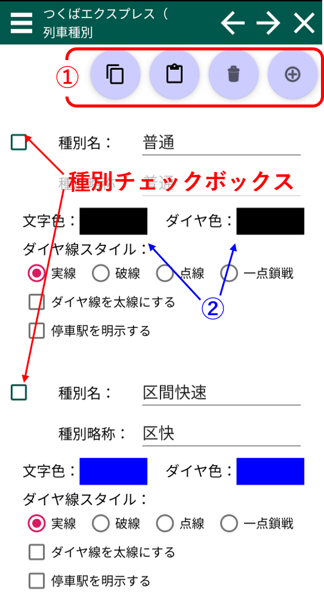
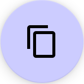
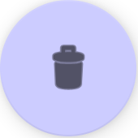

種別編集画面 スクショの番号の対応した説明があります。  ①：種別操作 チェックを入れた種別を全てコピーします 最初にチェックが入っている種別の直前に、コピーされた種別を挿入します。すべての種別がチェックされていなかれば、末尾に追加されます チェックを入れた種別全てを削除します 最初にチェックが入っている種別の直前に、新規種別を挿入します。すべての種別がチェックされていなかれば、末尾に追加されます ③：色編集 色部分をタップすると色選択画面が開きます。色を選択し「PICK」を選ぶと確定します。